ScatteringTransforms.jl
A fast, generic Julia implementation of the wavelet scattering transform for 1D signals, 2D images, 3D volumes, and scalar fields on the sphere — with averaged and localized outputs, reduced descriptors, a dependency-free default plus pluggable fast backends, batching, threading, distributed/MPI, and GPU.
Why scattering?
Two signals can share an identical power spectrum yet differ structurally. Scattering distinguishes them: an intermittent signal has strong cross-scale coupling S₂/S₁, while its phase-randomized Gaussian surrogate does not — though their power spectra and first-order S₁ are the same.
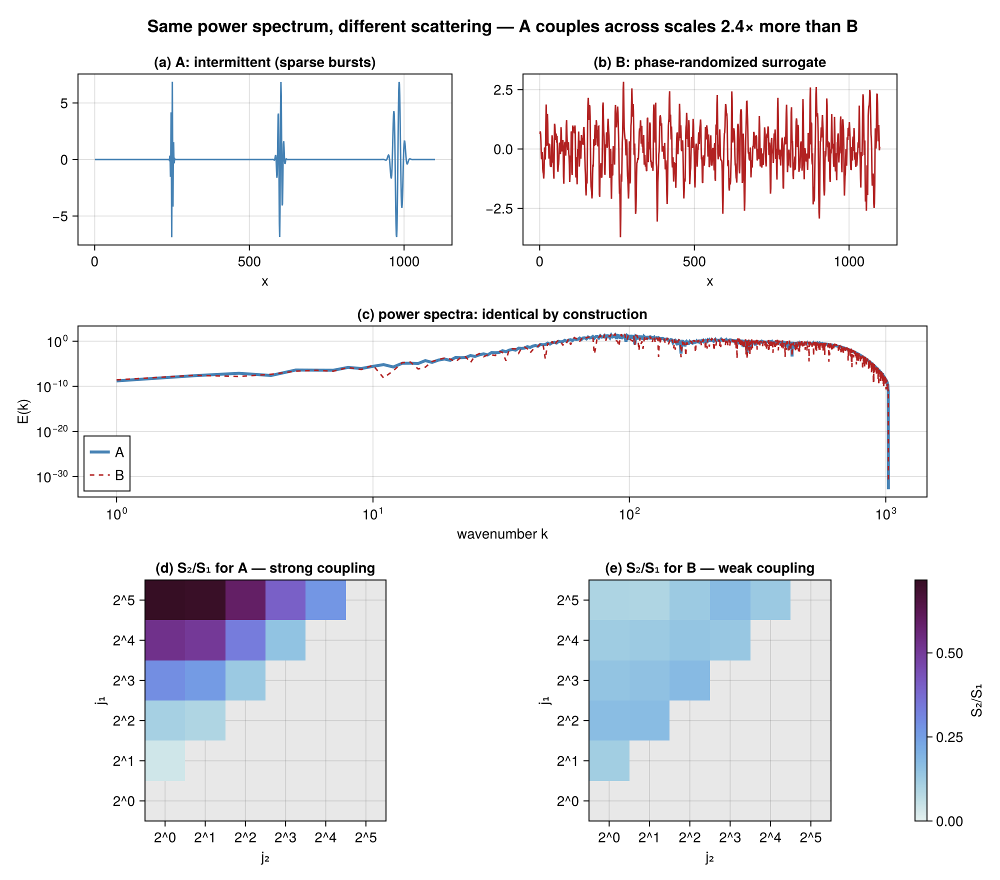
Features
- Domains: 1D, 2D (oriented Morlet), 3D (oriented 3D Morlet), and spherical (S², smooth difference-of-Gaussians bands).
- Grid-support matrix: Cartesian × spherical, on uniform/structured and nonuniform/scattered sampling — gridded
ScatteringTransform{1,2,3}D(FFT), scattered-planarscattered_planar_scattering(exact direct NUDFT), structured-spherestructured_spherical_scattering(fast SHT), scattered-spherespherical_scattering(exact direct SHT). Every cell has an in-core, dependency-free default; FINUFFT / NUFSHT are optional fast paths selected via thespectralkeyword. - Two outputs: globally-averaged coefficients
st(x)and the localized (Mallat) fieldscattering_field(st, x) = (|U_p x| ⋆ φ_J)↓(their spatial means agree by construction). - Correct path structure: second order over strictly coarser scales, all orientation pairs.
- Reduced descriptors:
normalized_coefficients(S1/S0,S2/S1),log_coefficients, and 2D sparsitys₂₁/ anisotropys₂₂(compute_shape_sparsity). - Reconstruction: exact linear wavelet-frame inverse (
wavelet_transform/iwavelet), phase retrieval (reconstruct_phase), and gradient-descentsynthesizefrom coefficients (DifferentiationInterface extension, anyADTypesbackend). - Monogenic (Riesz) scattering:
MonogenicScattering(1D/2D/3D) with the rotation-covariant monogenic amplitude + continuous orientation/phase (monogenic_components); on S²,spherical_monogenic_scattering(amplitude) andspherical_monogenic_components(pointwise orientation/phase via the spin-1 Riesz vector). - Tight-frame filter bank:
|φ|² + Σⱼ|ψⱼ|² ≡ 1(non-expansive). - Pluggable spectral backend: in-core direct-sum default;
using FFTW→O(N log N)fast path (spectral = AutoSpectralBackend() | DirectSumSpectralBackend() | FFTSpectralBackend()). - Scale:
scattering_batch(one plan reused),ThreadedBackend(OhMyThreads),DistributedBackend/MPIBackend(parametric over the inner backend),GPUBackend(vendor-neutral KernelAbstractions: CUDA/ROCm/oneAPI/Metal, orKA.CPU()). - Generic & type-stable:
Float32/Float64, autodiff-friendly, GPU-array-ready hot path.
Quick start
Symbols live in submodules and are accessed via fully-qualified paths — the package intentionally does not re-export names into the top level (see the API Reference). Alias the package for brevity:
using ScatteringTransforms: ScatteringTransforms as ST
using FFTW: FFTW # optional: loading it switches on the O(N log N) fast path automatically
# 1D
st = ST.Scattering1D.ScatteringTransform1D(1024, 8; Q=1, max_order=2)
c = st(randn(1024))
ST.Coefficients.zeroth_order(c); ST.Coefficients.first_order(c); ST.Coefficients.second_order(c)
# 2D / 3D
c2 = ST.Scattering2D.ScatteringTransform2D((256, 256), 4; L=8)(randn(256, 256))
c3 = ST.Scattering3D.ScatteringTransform3D((32, 32, 32), 3; n_orient=6)(randn(32, 32, 32))
# localized field, reductions, batching
field = ST.ScatteringFields.scattering_field(st, randn(1024)) # per-path low-passed, subsampled maps
red = ST.Reductions.normalized_coefficients(c) # s1 = S1/S0, s2 = S2/S1
B = ST.scattering_batch(st, randn(1024, 100)) # (coeffs × 100), one plan reusedFilter bank (tight frame)
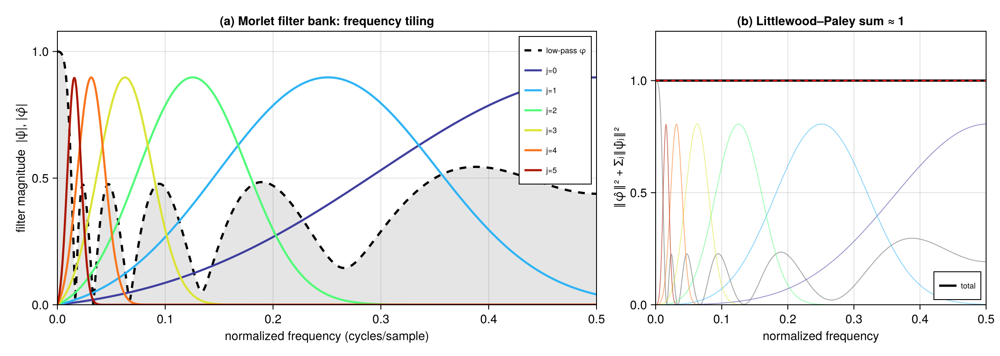
1D and 2D scattering
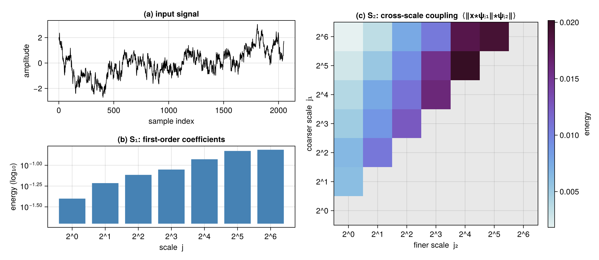
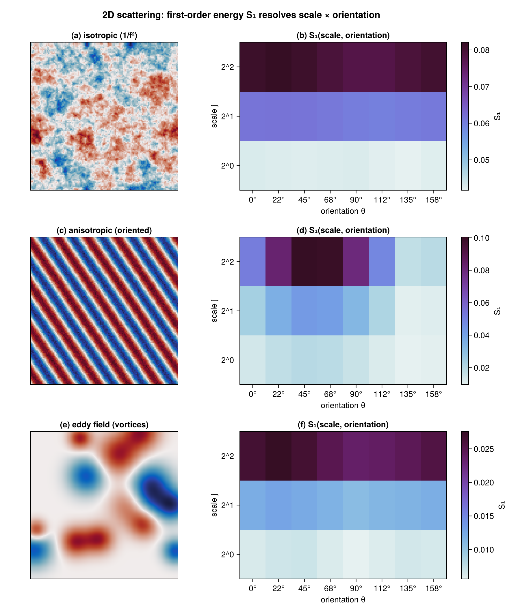
Localized field and reductions
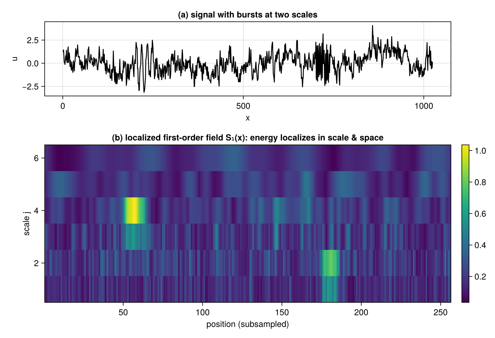
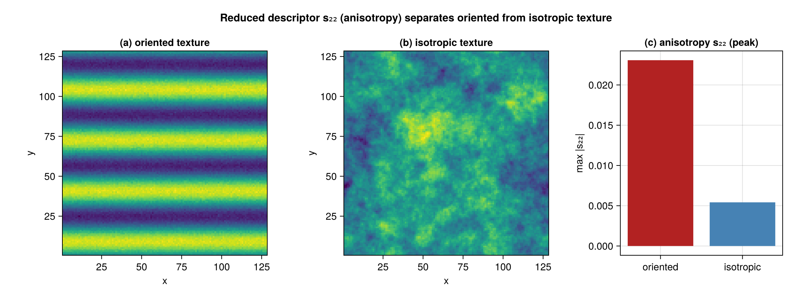
Reconstruction & synthesis
The complex (pre-modulus) wavelet layer is exactly invertible (iwavelet, machine precision); from the scattering coefficients, synthesize descends ‖S(x̂)−S(x)‖² (via DifferentiationInterface) to draw a new sample with matching multiscale statistics — in 1D and 2D.
using DifferentiationInterface: DifferentiationInterface
using Enzyme: Enzyme
using ADTypes: AutoEnzyme
# exact linear inverse (machine precision)
x̂ = ST.Inverse.iwavelet(st, ST.Inverse.wavelet_transform(st, signal))
# coefficient synthesis from noise (a matching sample, not the original field). Runtime activity is
# required: the cascade maps a closure over the filter bank, so every closure holds constant filters
# next to the active input and Enzyme cannot separate the two statically.
res = ST.synthesize(st, signal; iters = 400,
backend = AutoEnzyme(; mode = Enzyme.set_runtime_activity(Enzyme.Reverse)))Any ADTypes backend works — the differentiable forward is the non-mutating scattering(st, x). Use the in-core direct-sum spectral backend for reverse mode: it is plain scalar arithmetic and needs no FFT rules.
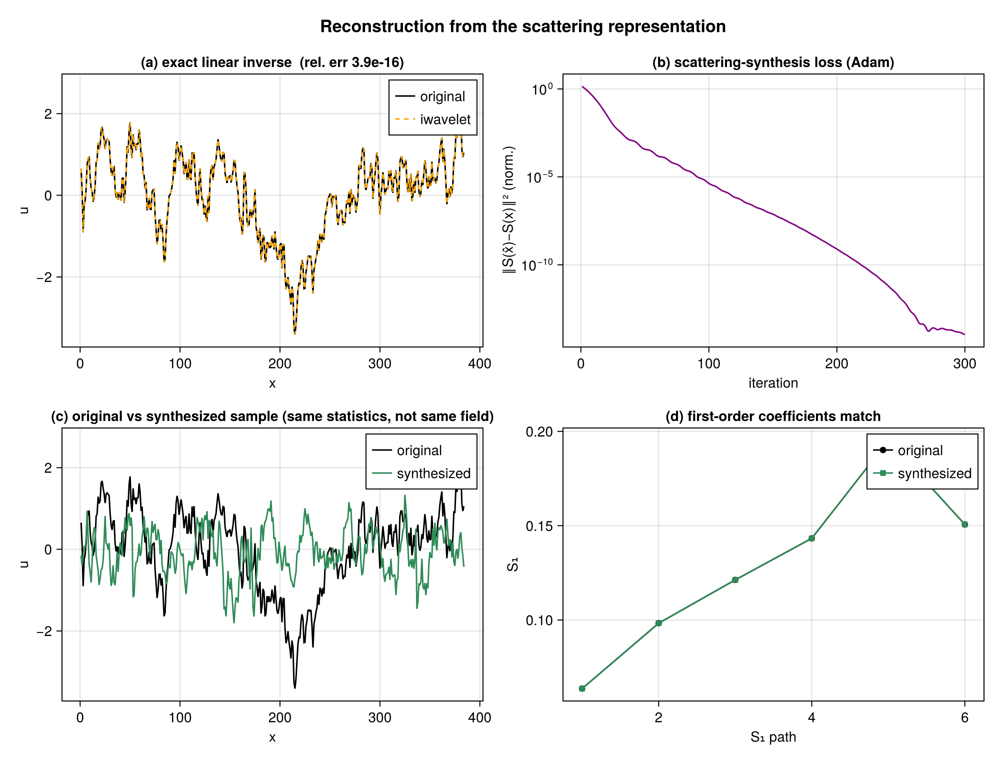
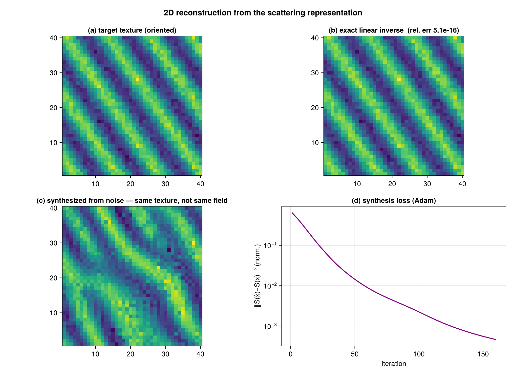
Monogenic (Riesz) scattering
MonogenicScattering uses the rotation-covariant monogenic amplitude in place of the oriented modulus, and monogenic_components recovers the local amplitude envelope and a continuous orientation (not quantized into bins).
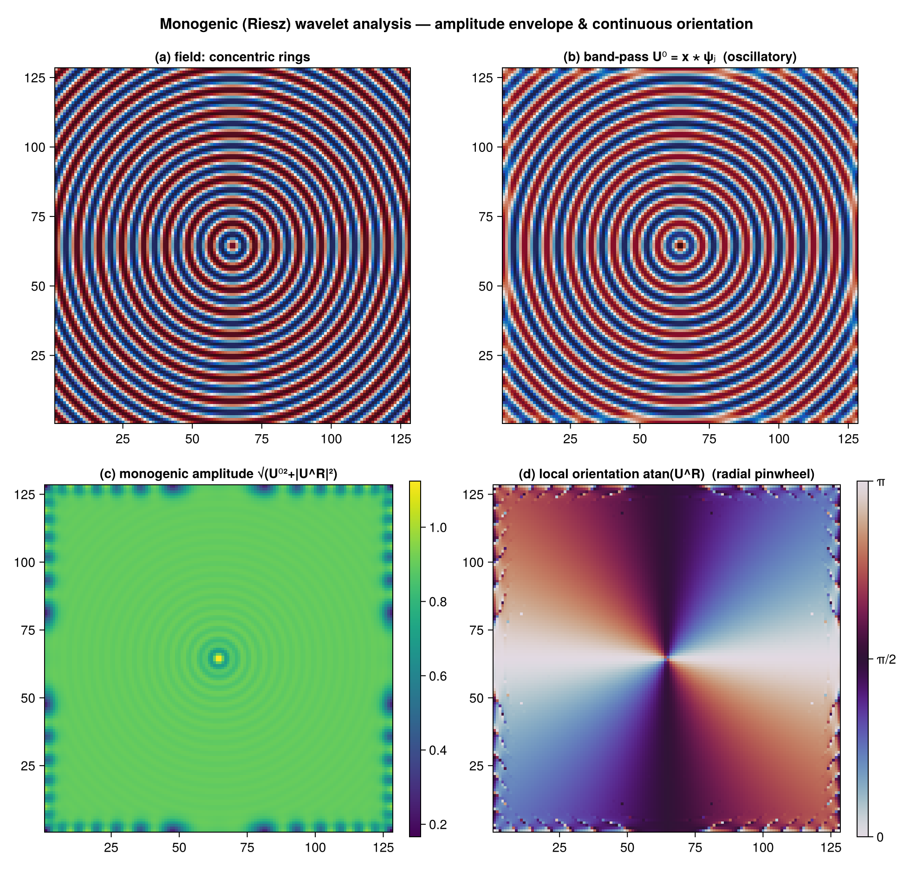
Nonuniform / scattered planar grids
Off-lattice / gappy planar data is scattered onto a uniform Fourier mode grid by a nonuniform DFT (scattered_planar_scattering); on a uniform grid it reproduces the gridded FFT transform exactly. The default is an in-core exact direct NUDFT (no dependencies); using FINUFFT enables the faster NUFFT path via spectral = NUFFTSpectralBackend().
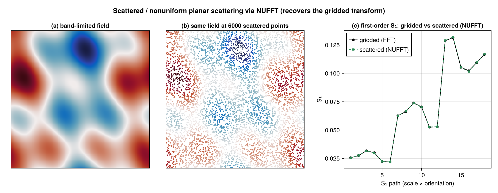
Spherical scattering
On S², both scattered points (spherical_scattering; in-core direct SHT by default, NUFSHT fast path when loaded) and a structured Clenshaw–Curtis grid (structured_spherical_scattering, fast SHT) give matching coefficients; the monogenic Riesz energy is computed with spin-0 transforms via a Bochner identity, and spherical_monogenic_components synthesizes the spin-1 Riesz vector for pointwise orientation/phase.
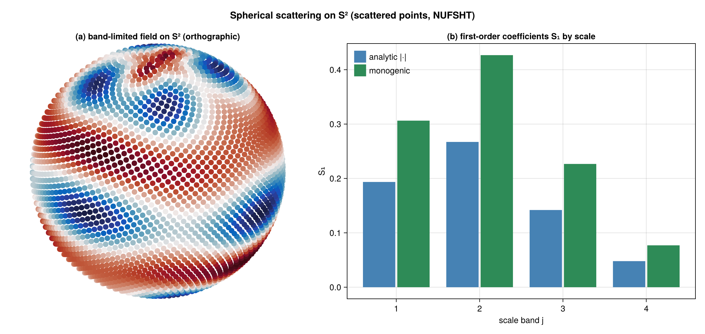
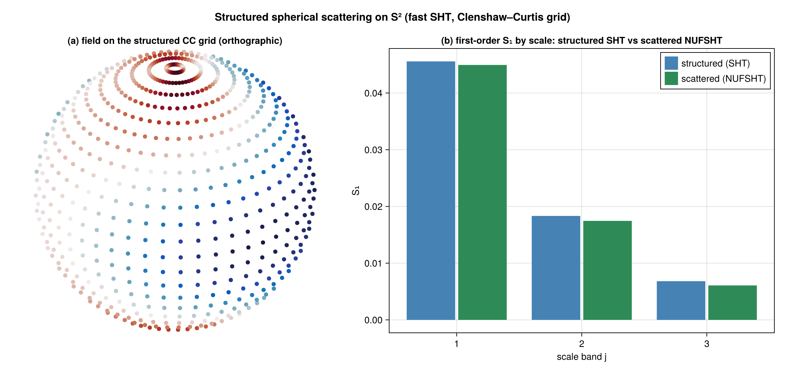
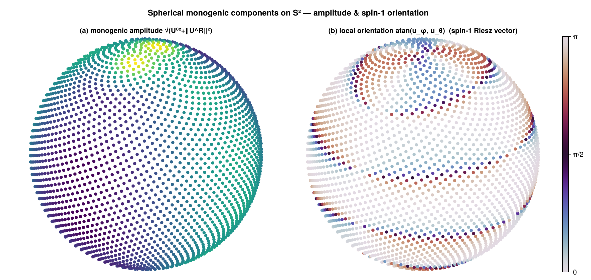
Backends & scale
The in-core direct-sum transform is dependency-free; loading FFTW selects an O(N log N) fast path automatically (identical results). scattering_batch reuses one plan/workspace across a stack; using OhMyThreads, using Distributed, or using MPI enable scattering_batch(ThreadedBackend(), …), DistributedBackend(…), and MPIBackend(…).
On the scattered surfaces the batch is also a transform axis: NUFFT and NUFSHT libraries transform several co-located fields per call, so building with ntrans = B runs each cascade step as one transform over the whole stack rather than one per field.
sp = ST.ScatteredPlanar.build(Float64, x, y, (32, 32), 3; L = 4, ntrans = 8)
ST.scattering_batch(sp, X) # X is (M, 8)
ST.scattering_batch(ThreadedBackend(), sp, X) # composes with threadsA plan's batch width is fixed when it is built, so such a transform takes stacks of exactly that width (a multiple of it when threaded) and refuses any other rather than reshaping silently. Backends that transform one field per call report a width of 1 and keep the per-field loop.
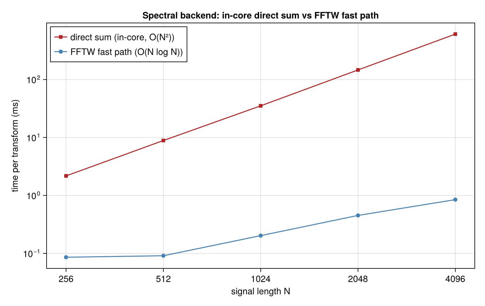
Documentation
- Theory — mathematical background
- API Reference — functions and types
Citation
@software{scatteringtransforms_jl,
author = {Benjamin, Jordan},
title = {ScatteringTransforms.jl: wavelet scattering in Julia},
url = {https://github.com/jbphyswx/ScatteringTransforms.jl}
}